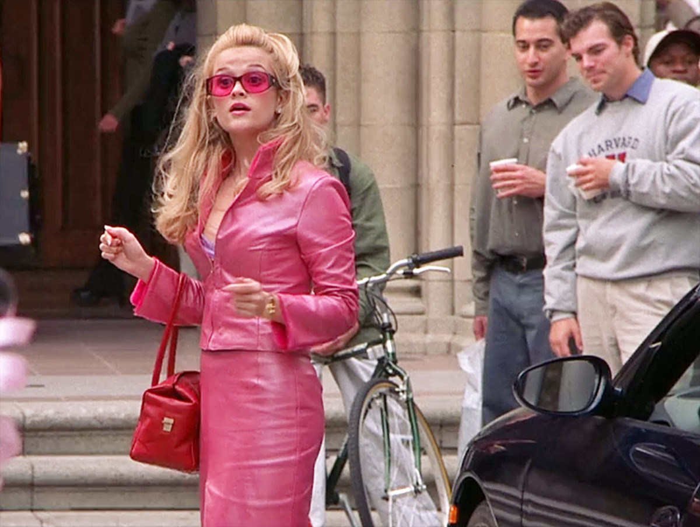
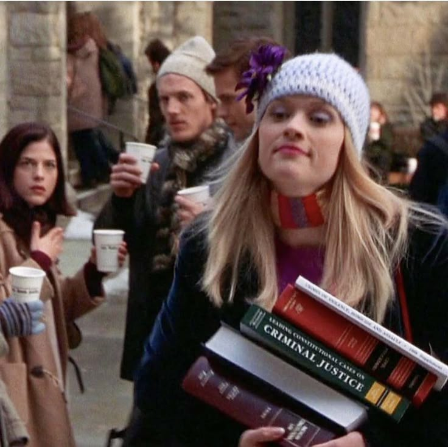
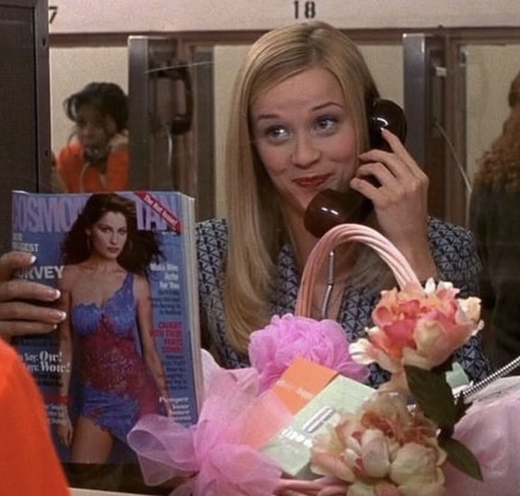

Elle vs. Harvard
Elle struggles to fit in but starts finding her voice. At first, Elle Woods struggled to fit in at Harvard Law, facing judgment from professors and classmates who dismissed her as nothing more than a fashion-obsessed sorority girl. Intimidated by the competitive environment and feeling out of place, she began to question whether she truly belonged.
You got into Harvard Law?
"What, like it's hard?" - Elle Woods shocked everyone when she confidently outsmarted her peers in class and cracked a high-profile murder case with her sharp legal instincts and unexpected knowledge of beauty. Her transformation from underestimated outsider to top law student left both her critics and classmates in awe.
Elle sheds her need to impress Warner and begins fighting for herself.
Elle Woods realizes Warner isn’t the one for her when she sees that he’ll never truly respect or support her ambitions—he just wants someone who fits his mold. The turning point hits when she starts thriving at Harvard on her own, earns the internship he didn’t get, and finally sees that she doesn’t need to shrink herself to fit into his world—because she’s busy building her own.
Making Friends
Elle Woods, always blending charm with compassion, quickly formed an unlikely friendship with her client, Brooke Taylor-Windham, a fitness guru accused of murder. Refusing to see Brooke as just another case, Elle connected with her on a personal level, earning her trust through kindness and persistence. In one memorable moment, Elle visited Brooke in jail—not just with legal updates, but with a thoughtful gesture: a Cosmopolitan magazine. That simple, sparkly offering symbolized Elle's unique approach to law—leading with heart, empathy, and a touch of pink flair, even behind bars.